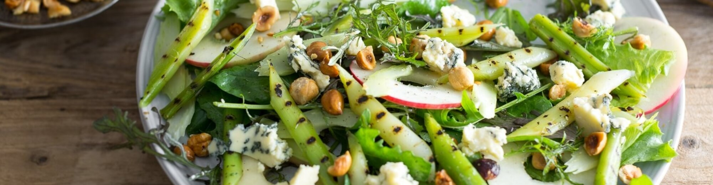

Recipies

GRILLED LEEK AND BLUE CHEESE SALAD
As long as you take care of the leeks, the rest will take of itself. Make sure they are well cooked before griddling; the process is more about adding flavour than cooking. It takes so little time to mark them – too long, and they'll burn and turn bitter. The other components can be sliced, diced or crumbled however you see fit. You could try switching the apples for pears, or using walnuts or pecans in place of the hazelnuts.
Ingredients
- 3 small leeks
- 1 tsp Dijon mustard
- 1 tbsp cider vinegar
- 3 tbsp olive oil
- 40g hazelnuts, toasted and skinned
- 2 celery sticks
- 2 apples
- 100g salad leaves
- 100g blue cheese, crumbled
- Put a pan of salted water on to boil. Trim the flared leaf tops away from the leeks so you are just left with straight lengths.
- Poach the leeks in the boiling water for about 8 minutes, until they are easily pierced with a knife tip. Remove them from the pan and allow to cool.
- Put a griddle pan on a high heat. Peel away the top layer or two from the leeks; they will have become overcooked and water-logged. Spilt the leeks in half lengthways, and slice into 3cm pieces.
- When the griddle is very hot, cook the leeks for 20-30 seconds a side; enough to mark them, but not so much that they start to burn. Remove and season with salt.
- Make the vinaigrette by whisking together the mustard and vinegar. Whisk in the olive oil a small bit at a time, until you have a thick, emulsified dressing. Season with salt and pepper.
- Break the hazelnuts into coarse pieces. Dress with a tiny bit of oil and a pinch of salt. The oil helps the seasoning to stick.
- Thinly slice the celery at a sharp angle. Core the apples and slice them into thin discs.
- Throw the salad leaves, leeks, apple and celery together with the dressing. Pile artfully onto a serving dish and scatter over the hazelnuts and blue cheese.